측량및지형공간정보기사 (2005-05-29 기출문제)
1과목: 측지학 및 위성측위시스템
1. 지오이드(Geoid)면에 대한 설명으로 옳지 않은 것은?
- 평균해수면의 연장이다.
- 지구타원체 법선과 지오이드 법선의 차이를 수준 편차라 한다.
- 위치에너지가 0 인 면이다.
- 중력 등포텐셜(potential)면이다.
(정답률: 85%)

2. 다음 중 의사거리(pseudo range) 결정에 영향을 주는 오차의 원인이 아닌 것은?
- 위성의 궤도오차
- 대기층의 지연오차
- 안테나에서 GPS 신호 수신중심부의 변동오차
- 모호정수 결정법의 종류
(정답률: 80%)
3. 다음 설명 중 옳지 않은 것은?
- 기하학적 측지학에는 천문측량, 위성측지, 높이결정 등이 있다.
- 측지학이란 지구내부의 특성, 지구의 형상, 지구표면의 상호위치 관계를 정하는 학문이다.
- 측지측량(대지측량)이란 지구의 곡률을 고려하지 않은 측량으로서 11km 이내를 평면으로 취급한다.
- 물리학적 측지학에는 지구의 형상해석, 중력측정, 지자기 측정을 포함한다.
(정답률: 89%)
4. 지구의 적도 반경 a=6,378km, 극반경 b=6,356km라고 할 때 지구의 편평율은?
- 1/270
- 1/280
- 1/290
- 1/310
(정답률: 81%)
5. 자오선 수차에 대한 내용으로 옳은 것은?
- 자오선 수차는 좌표원점에서 남북으로 멀어질수록 그 값이 크다.
- 자오선 수차는 좌표원점에서 동서로 멀어질수록 그 값이 크다.
- 진북 방향각은 좌표원점의 동쪽이 (-)값이다.
- 방위각은 방향각에 진북 방향각을 더한 값이다.
(정답률: 43%)
6. 다음 위성 중 위치기반서비스(LBS)의 응용과 가장 관계가 먼 것은?
- GPS 위성
- GLONASS 위성
- GALILEO 위성 프로젝트
- LANDSAT 위성
(정답률: 69%)
7. 지구상 한점에서 지오이드에 대한 연직선이 천구의 적도면과 이루는 각으로 지오이드를 기준으로 한 위도는?
- 측지위도
- 천문위도
- 지심위도
- 화성위도
(정답률: 84%)
8. 기준국과 이동국간의 거리가 짧을 경우 상대측위를 수행하면 절대 측위에 비해 정확도가 현격히 향상되게 되는데 그 이유로 부적합한 것은?
- 위성궤도오차가 제거된다.
- 다중경로오차(multipath)를 제거할 수 있다.
- 전리층에 의한 신호의 전파지연이 보정된다.
- 위성시계오차가 제거된다.
(정답률: 79%)
9. 구면 삼각형의 면적을 3,147km2, 지구의 곡률반경을 6,370km라고 할 때 구과량은?
- 7″
- 16″
- 23″
- 30″
(정답률: 80%)
10. 표고 326.42m의 평탄지에서 거리 500m를 평균해면상의 값으로 보정하려고 할 때 보정량은? (단, 지구반경은 6370km로 한다)
- -2.56cm
- 1.28cm
- -5.12cm
- 3.28cm
(정답률: 82%)
11. 중력이상의 주된 원인이 되는 것은?
- 지하물질의 밀도 분포
- 화산폭발의 영향
- 태양과 달의 인력
- 지구의 공전 운동
(정답률: 83%)
12. 미국에서 1959년 시작하여 1964년 실용화 되므로서 극운동 또는 지구의 자전속도 변동조사 및 범세계적 위치 결정에 사용되는 위성시스템은?
- ABS
- NNSS
- AGPS
- APOLLO
(정답률: 79%)
13. 다음 중 지구의 공전으로 인하여 발생하는 현상이 아닌것은?
- 계절의 변화
- 일조 시간의 변화
- 태양의 남중고도의 변화
- 인공위성의 궤도가 서편하는 현상
(정답률: 77%)
14. 해저 지형측량에서 수심이 8,000m이고 수면에서 발사한 초음파가 해저에 반사되어 약 10초 후에 수신된다면 이 초음파의 속도는?
- 750m/sec
- 1500m/sec
- 1600m/sec
- 8000m/sec
(정답률: 77%)
15. 평면직교좌표의 원점에서 동쪽에 있는 A점에서 B점방향의 자북방위각을 관측한 결과 89°10' 25"이었다. A점에서의 자침편차가 5°W일 때 진북방위각은?
- 84°10' 25"
- 89°30' 25"
- 89°⑤' 25"
- 94°10' 25"
(정답률: 80%)
16. 다음 중에서 위성의 궤도요소로서 적합하지 않은 것은?
- 궤도의 장반경
- 이심률
- 궤도 경사각
- 위성의 고도
(정답률: 75%)
17. GPS 측위 작업 중 DOP(Dilution of Precision)에 관련한 설명 중 옳지 않은 것은?
- DOP는 위성의 기하학적 배치상태가 정확도에 어떻게 영향을 주는가를 추정할 수 있는 척도이다.
- DOP는 위성의 위치, 높이, 시간에 대한 함수관계가 있다.
- 계산된 DOP 값이 큰 수치로 나타나면 정확도가 높다는 의미이다.
- DOP에는 세부적으로 GDOP, PDOP, HDOP, VDOP 및 TDOP 등이 있다.
(정답률: 83%)
18. 다음 설명 중 옳지 않은 것은?
- 지자기는 방향과 크기를 갖고 있는 벡터이다.
- 지하구조를 탄성파 측정에 의하여 탐사할 수 있다.
- EDM에 의해 정밀한 중력측정이 가능하다.
- 그리니치 천문대를 통과하는 자오선과 어느 지점을 통과하는 자오선과의 교각을 경도라 한다.
(정답률: 83%)
19. 지자기에 관한 다음 사항에서 맞지 않는 것은?
- 지자기는 그 방향과 크기 등을 구함으로써 정해진다.
- 편각은 모든 지방에서 일정하다.
- 지자기의 방향과 수평면과의 각을 복각이라 한다.
- 지자기의 방향과 자오선과의 각을 편각이라 한다.
(정답률: 78%)
20. 아이소스타시(Isostasy)에 대한 설명으로 틀린 것은?
- Isostasy는 수직을 의미한다.
- Isostasy는 해양 또는 대륙 등의 대규모 구조에 잘 성립한다.
- Isostasy가 성립되지 않는 곳은 해구와 해령이다.
- Isostasy는 지각의 강성, 맨틀의 점성에도 잘 성립한다.
(정답률: 75%)
2과목: 응용측량
21. 그림과 같은 삼각형 토지의 한변 BC(=55m) 위의 점 D와 변 AC(=40m) 위의 점 E를 연결하여 △ABC의 면적을 2등분할 때 AE의 길이는?
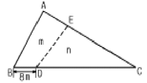
- 16.6m
- 17.7m
- 18.8m
- 19.9m
(정답률: 63%)
22. 댐 측량 중에서 하천의 개발계획, 즉 발전, 치수, 농업 및 공업용수 등의 종합 계획에 중점을 두고 실시하는 측량은?
- 조사계획측량
- 실시설계측량
- 안전관리측량
- 공사측량
(정답률: 77%)
23. 노선측량 중 시공측량에 속하지 않는 것은?
- 용지측량
- 중심점 인조측량
- 시공기준틀 설치측량
- 준공검사 조사측량
(정답률: 73%)
24. 단곡선을 설치하려고 한다. 곡선반지름(R)이 500m, 교각(I)이 60°일 때 접선길이(T.L.)와 곡선길이(C.L.)는?
- 288.68m, 523.60m
- 288.68m, 553.60m
- 308.68m, 523.60m
- 308.68m, 553.60m
(정답률: 71%)
25. 클로소이드의 곡선 길이(L)이 200m, 매개변수(A)가 40m일 때 접선각(τ)은 얼마인가?
- 11.5 Rad
- 12.5 Rad
- 13.5 Rad
- 14.5 Rad
(정답률: 74%)
26. 지적측량의 순서로 옳은 것은?
- 계획수립 - 선점 및 조표 - 준비 및 현지답사 - 성과표 작성 - 관측 및 계산
- 준비 및 현지답사 - 계획수립 - 선점 및 조표 - 성과표 작성 - 관측 및 계산
- 준비 및 현지답사 - 선점 및 조표 – 계획수립 - 관측 및 계산 - 성과표 작성
- 계획수립 - 준비 및 현지답사 - 선점 및 조표 - 관측 및 계산 - 성과표 작성
(정답률: 78%)
27. 건설하고자 하는 구조물이 축척 1/1000의 도면에서 면적이 40㎝2이면 실제 면적은?
- 5000m2
- 4000m2
- 3000m2
- 2000m2
(정답률: 67%)
28. 유토곡선의 성질에 대한 설명으로 틀린 것은?
- 유토곡선이 하향인 구간은 성토구간이고, 상향인 구간은 절토구간이다.
- 유토곡선의 극대점은 성토에서 절토로 옮기는 점이고, 극소점은 절토에서 성토로 옮기는 점이다.
- 절토와 성토의 평균운반거리는 유토곡선토량의 1/2점간의 거리로 한다.
- 평균운반거리는 절토부분의 중심과 성토부분의 중심간의 거리를 의미한다.
(정답률: 62%)
29. 다음 중 경사가 급한 사갱 내에서 고저차를 측량하는 데 사용할 수 있는 가장 정밀한 방법은?
- 레벨에 의한 직접 수준 측량
- 기압계에 의한 기압 수준측량
- 경사계와 줄자를 이용한 계산 방법
- 트랜싯과 줄자의 조합에 의한 간접 수준 측량
(정답률: 39%)
30. 갱내의 천정에 측점 A, B가 그림과 같이 결정되었다고 할때 두 점의 고저차 H는 얼마인가? (단, 관측 경사거리=100.5m, 수직각=30° 25′ 30″)
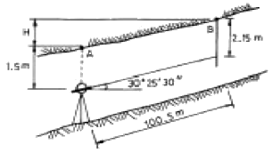
- 51.54m
- 59.67m
- 87.31m
- 103.31m
(정답률: 62%)
31. 반경 10㎝의 구면에서 구면삼각형 ABC의 각을 측정하니 A=75°, B=66°, C=49°이었다면 구면삼각형의 면적은 얼마인가?
- 14.45㎝2
- 15.45㎝2
- 16.45㎝2
- 17.45㎝2
(정답률: 65%)
32. 다음 중 완화곡선의 종류로만 짝지어진 것은?
- 클로소이드, 3차 포물선, 반향곡선
- 클로소이드, 3차 포물선, 렘니스케이트 곡선
- 3차 포물선, 렘니스케이트 곡선, 반향곡선
- 단곡선, 원곡선, 배향곡선
(정답률: 77%)
33. 사각형 형태의 부지에 대하여 동일한 간격으로 나누어 그 지점의 표고를 관측한 결과를 이용하여 토공량을 산출하기 위한 방법으로 가장 적절한 것은?
- 양단면평균법
- 중앙단면법
- 점고법
- 등고선법
(정답률: 83%)
34. 측위망원경에 의해 수평각을 측정하여 H′=80°를 얻었다. 주망원경과 측위망원경의 시준선 간의 거리OC=OC'=0.10m이고, 시준선까지의 거리 AO=35.77m, BO=23.10m이었다면 실제 수평각(H)는 얼마인가?
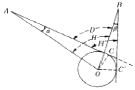
- 79° 55′ 44″
- 80° ⑤′ 16″
- 80° 11′ ⑤″
- 80° 15′ 25″
(정답률: 73%)
35. 하천측량에서 합류점, 분류점이나 만곡이 심한 장소로 높은 정확도가 요구되는 곳에서는 어느 망을 구성하는 것이 가장 좋은가?
- 유심망
- 결합다각망
- 복합망
- 사변망
(정답률: 88%)
36. 경관평가요인 중 시설물의 전체 형상을 인식할 수 있고 경관의 주제로서 가장 적당한 수평시각( ≤H )의 크기는?
- 0°＜ ≤H ≤10°
- 10°＜ ≤H ≤30°
- 40°＜ ≤H ≤60°
- 60°＜ ≤H ≤90°
(정답률: 85%)
37. 클로소이드(clothoid)곡선에 대한 설명으로 틀린 것은?
- 클로소이드는 나선형 곡선의 일종이다.
- 클로소이드 곡선의 반지름은 시점에서 무한대이고, 종점에서 원곡선의 반지름과 같게 된다.
- 모든 클로소이드는 닮은꼴이다.
- 클로소이드 곡선은 곡률이 곡선 길이에 반비례하는 곡선이다.
(정답률: 64%)
38. 하천의 유수부 횡단면을 5m 간격으로 4개 구간으로 나누어 각 구간의 유수단면적(A)을 구하고 각 구간의 중심연직선 상에서 평균유속(V)을 관측하였다면 전체 유량은? (단, A1=7.6m2, A2=18.0m2, A3=23.3m3, A4=9.5m2, V1=0.5m/s, V2=0.75m/s, V3=0.7m/s, V4=0.6m/s)
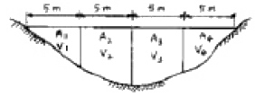
- 29.3m3/sec
- 39.3m3/sec
- 43.7m3/sec
- 45.7m3/sec
(정답률: 30%)
39. 단곡선 설치 방법 중 접선과 현이 이루는 각을 이용하여 설치하는 방법으로 정확도가 비교적 높아 가장 널리 사용되는 방법은?
- 접선에 대한 지거법
- 지거설치법
- 편각 설치법
- 장현에서의 종거에 의한 방법
(정답률: 63%)
40. 하천측량에서 거리표 설치와 고저측량에 관한 설명으로 틀린 것은?
- 제방이 있는 경우 거리표는 하천의 중심에 직각방향으로 양안에 설치한다.
- 거리표는 반드시 기점으로부터 하천의 우안을 따라 500m 간격으로 설치한다.
- 횡단측량은 양안의 거리표를 기준으로 그 선상의 고저를 측량한다.
- 하천측량에서의 고저측량 작업은 거리표 설치, 종단 및 횡단측량, 심천측량 등을 포함한다.
(정답률: 54%)
3과목: 사진측량 및 원격탐사
41. 다음 중 항공사진의 특수 3점으로만 짝지어진 것은?
- 주점, 연직점, 등각점
- 주점, 중심점, 등각점
- 표정점, 연직점, 등각점
- 주점, 표정점, 연직점
(정답률: 89%)
42. 다음과 같은 GIS 자료 중, 속성자료로 보기 어려운 것은?
- 관거 매설 년도
- 관거 재질
- 관거 관리 이력
- 관거 시점 좌표
(정답률: 82%)
43. 일반적으로 초광각(Super wide angle)카메라의 피사각은 약 얼마인가?
- 60˚
- 90˚
- 120˚
- 150˚
(정답률: 70%)
44. 표고 100m 상의 삼각점 A, B를 사진상에서 관측하였더니 두 점간의 거리가 8.4cm이고, 축척 1/25,000 지도상에서는 3.6cm였다. 이 사진 촬영고도(표고)는? (단, 사진기의 초점거리는 15cm이다.)
- 약 1600m
- 약 1700m
- 약 1800m
- 약 1900m
(정답률: 23%)
45. 다음 중 같은 조건에서 촬영하였을 경우에 과고감이 가장 작은 사진기는?
- 광각 사진기
- 보통각 사진기
- 초광각 사진기
- 모두 같다.
(정답률: 50%)
46. 지리정보체계의 자료구조에 관한 설명 중 틀린 것은?
- 벡터방식은 점, 선, 면으로 구성되어 있다.
- 벡터방식에서 폐합되지 않은 다각형은 오류가 입력된 정보이다.
- 격자구조는 위상관계가 필요없다.
- 격자구조에서 자료저장방식에는 chain code, run-length code 등이 있다.
(정답률: 69%)
47. 다음 중 사진측량의 특징으로 옳지 않은 것은?
- 정밀도가 균일하다.
- 근접하기 어려운 대상물을 측정하기 용이하다.
- 4차원 측량이 가능하다.
- 일괄적인 연속작업으로 처리되므로 분업화가 어렵다.
(정답률: 88%)
48. 데이타베이스의 속성정보를 연결할 때 속성정보를 연결(join)할 수 없는 속성관계는? (단, 보기 앞의 속성으로 뒤의 속성을 연결(join)하는 경우임.)
- 도행정구역 대 도청
- 토양중분류 속성 대 토양대분류 속성
- 건물 대 건물공동소유주
- 주민번호 대 주민
(정답률: 50%)
49. 점대면 보간방법 중 결과값을 가장 가까운 지점의 값으로 지정하여 구역을 설정하는 방법으로 강우량 자료보간방법에 많이 쓰이는 방법은 무엇인가?
- 역거리경중법
- Kriging
- Thiessen polygon
- TIN
(정답률: 69%)
50. 종중복도 60%, 횡중복도 30% 일 때 촬영 종기선의 길이와 촬영 횡기선의 길이의 비는?
- 6 : 3
- 2 : 1
- 3 : 1
- 4 : 7
(정답률: 71%)
51. 40km×20km의 토지를 축척 1/20,000로 항공사진 촬영을 할때 입체모델(Model)의 수는? (단, 화면의 크기는 18cm×18cm, 보통각 사진으로 종중복도 60%, 횡중복도는 30%로 함. 계산은 스트립을 먼저 계산하는 정밀계산으로 함)
- 224모델
- 89모델
- 560모델
- 320모델
(정답률: 67%)
52. 편위수정시 샤임플러그의 조건을 만족시키면 어떤 조건이 자동으로 만족되는가?
- 기하학적 조건
- 광학적 조건
- 소실점의 조건
- 포로코페의 조건
(정답률: 25%)
53. 격자자료 구조(래스터 구조)에 대한 설명으로 옳은 것은?
- 격자의 크기보다 작은 객체의 표현도 가능하다.
- 격자의 크기가 작을수록 나타낼 수 있는 객체의 형태를 자세히 나타낼 수 있다.
- 격자의 크기가 작을수록 표현되는 자료는 보다 상세한 반면, 컴퓨터 저장용량에는 변함이 없다.
- 격자의 크기가 작아지면 이에 비례하여 자료의 양이 감소한다.
(정답률: 62%)
54. 수치지형모형자료의 자료기반구축에서 임의로 분포된 실측 자료점을 이용하여 격자형 자료를 생성하거나, 항공사진, 인공위성 영상의 기준점자료를 이용하여 영상소를 재배열할 경우에 사용되는 보간법 중 입력 격자상에서 가장 가까운 영상소의 밝기 값을 이용하여 출력격자로 변환시키는 방법은?
- 최근린보간법
- 공일차보간법
- 공이차보간법
- 공삼차보간법
(정답률: 67%)
55. 촬영고도 6,350m, 사진(Ⅰ)의 주점기선장=67mm, 사진(Ⅱ)의 주점기선장=70mm일 때 시차차 1.37mm인 댐의 높이는?
- 107m
- 127m
- 137m
- 147m
(정답률: 74%)
56. 지형공간정보체계의 기능을 충분히 발휘하기 위하여 요구되는 구비요건으로 거리가 먼 것은?
- 하나 또는 그 이상의 자료입력방식
- 소요 공간관계와 관련된 정보의 저장 및 유지 기능
- 자료간의 상관성과 적절한 요소들의 원인-결과 반응을 고려한 모형화
- 도면 하드카피의 단일방식에 의한 자료출력
(정답률: 44%)
57. Buffer에 관한 설명으로 옳은 것은?
- 벡터자료의 면(polygon)자료에만 적용할 수 있다.
- buffer 결과물은 언제나 면(polygon)자료이다.
- 모든 buffer는 언제나 대상물로부터 일정한 거리만을 갖는다.
- buffer는 언제나 두 개 이상의 layer가 필요하다.
(정답률: 73%)
58. 다음 중 상호표정 인자가 아닌 것은?
- κ(카파)
- ψ(휘)
- ω(오메가)
- α(알파)
(정답률: 67%)
59. C-계수가 1500 인 도화기로 1/60,000 의 항공사진을 도화 작업할 때 신뢰할 수 있는 최소 등고선 간격은? (단, 초점거리는 150mm)
- 1m
- 3m
- 6m
- 9m
(정답률: 53%)
60. 초점거리 20㎝의 카메라를 사용하여 평지로부터 2000m의 촬영고도로 찍은 연직사진이 있다. 이 사진상에 찍혀있는 비고 400m 산의 사진 축척은 얼마인가?
- 1/4000
- 1/6000
- 1/8000
- 1/10000
(정답률: 64%)
4과목: 지리정보시스템
61. 거리를 측정할 때에 발생하는 오차 중에서 정오차가 아닌것은?
- 온도의 변화에 의한 오차
- 눈금을 잘못 읽었을 때, 발생하는 오차
- 테이프의 눈금이 잘못되어 발생하는 오차
- 테이프의 처짐(sag)으로 발생하는 오차
(정답률: 53%)
62. 그림과 같이 교호 수준측량을 실시하여 B점의 표고를 구한 값은?
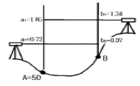
- 49.39m
- 50.65m
- 51.26m
- 50.63m
(정답률: 7%)
63. 삼각측량에 있어서 삼각점의 수평위치를 결정하는 요소는 무엇인가?
- 거리와 방향각
- 고저차와 방향각
- 밀도와 폐합비
- 폐합오차와 밀도
(정답률: 67%)
64. 평판측량을 한 결과 폐합오차가 허용범위내에 들어왔다면 폐합오차의 배분 방법은?
- 각의 크기에 비례하여 배분한다.
- 변의 길이의 역수에 비례하여 배분한다.
- 각 변에 균등하게 배분한다.
- 오차는 출발점으로부터 측점까지의 거리에 비례하여 배분한다.
(정답률: 53%)
65. 평판측량에 의해 축척 1/1000의 도면을 작성할 때 중심맞추기 오차(편심 거리)는 어느 정도까지 허용할 수 있는가? (단, 도상에서 허용제도오차는 0.2mm로 함)
- 5cm 이내
- 10cm 이내
- 20cm 이내
- 50cm 이내
(정답률: 43%)
66. 지형도에 의한 지형의 표시방법에 속하지 않는 것은?
- 음영법
- 등고선법
- 좌표점법
- 점고법
(정답률: 34%)
67. 평판측량에서 두 점 사이의 경사거리를 L, 수평거리를 S, 경사분획을 n 이라고 할 때 수평거리를 나타내는 식은?
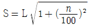
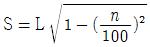
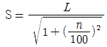
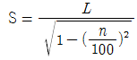
(정답률: 67%)
68. 100m2 정사각형 토지의 면적을 0.2m2까지 정확하게 구하기 위해서는 한변의 길이를 최대 몇 cm까지 구해야 하는가?
- 0.5cm
- 1.0cm
- 1.5cm
- 2.0cm
(정답률: 59%)
69. 우리나라 1:25,000 지형도의 주곡선의 간격은 얼마인가?
- 50m
- 20m
- 10m
- 5m
(정답률: 73%)
70. P점의 표고를 결정하기 위하여 A, B, C수준점으로부터 수준측량을 한 결과 아래와 같은 측정치를 얻었다. P점 표고의 최확치는?
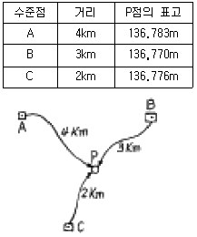
- 136.783m
- 136.776m
- 136.770m
- 136.763m
(정답률: 45%)
71. 거리측량에서 정밀도가 ±(5㎜＋3㎜/㎞)인 전파거리측량기 (EDM)로 3.8㎞의 거리를 측정할 때 예측되는 총오차는?
- ±10.25㎜
- ±12.45㎜
- ±14.75㎜
- ±16.40㎜
(정답률: 59%)
72. 조정이 복잡하고 포괄면적이 적으며 시간과 비용이 많이 요하는 것이 결점이나 정도가 가장 높은 삼각망은?
- 단열 삼각망
- 유심 삼각망
- 사변형 삼각망
- 결합 삼각망
(정답률: 74%)
73. 삼각점의 선정시 주의하여야 할 사항으로 옳지 않은 것은?
- 견고한 지반에 설치하여 이동, 침하 등이 없도록 한다.
- 삼각점 상호간에 시준이 잘 되어야 한다.
- 삼각형은 가능한 정삼각형에 가깝도록 하는 것이 좋다.
- 가능한 측점 수를 많게 하여 후속 측량의 활용도를 높인다.
(정답률: 65%)
74. 평지에서 트랜싯으로부터 정확히 50m, 100m 떨어진 점에 표척을 세우고 협장 읽음 0.4⑤m, 0.812m를 얻었다. 이때 시거 정수 K와 C는 얼마인가? (단, 측정의 오차는 없는 것으로 한다)
- K = 122.65, C = 0.35
- K = 122.65, C = 0.45
- K = 122.85, C = 0.25
- K = 122.85, C = 0.35
(정답률: 56%)
75. 노선거리 16km인 두점간의 수준차를 직접 수준측량에 의해 측량한 표준오차가 ±20mm이라면 1km 당 표준오차는?
- 0.625mm
- 1.25mm
- 2.50mm
- 5.00mm
(정답률: 50%)
76. 다음의 내용 중 올바르지 않은 것은?
- 방향각은 자오선 북방향에서 우회로 측정한 각이다.
- 삼각점의 위치는 경위도 또는 평면직각 좌표로 나타낸다.
- 우리나라 표고는 인천만의 평균해수면으로부터의 높이이다.
- 구면거리는 항상 평면거리보다 길다.
(정답률: 22%)
77. 삼각측량에서 인접한 변의 길이가 32km, 28km이고 사이각이 42°50' 20" 일 때 구과량은? (단, 지구 곡률반경은 6370km)
- 1.3"
- 1.5"
- 1.7"
- 1.9"
(정답률: 60%)
78. 축척과 도면 크기, 면적의 관계에 대한 설명으로 옳은 것은?
- 축척 1/500 도면의 면적은 실제 면적의 1/1,000이다.
- 축척 1/600 도면을 1/200으로 확대 했을 때 도면의 크기는 3배가 된다.
- 축척 1/300 도면의 면적은 실제면적의 1/9,000이다.
- 축척 1/500인 도면을 축척 1/1,000으로 축소 했을 때 도면의 크기는 1/4이 된다.
(정답률: 69%)
79. 기선 D=20m, 수평각 α=80°, β=70°, 연직각 V=40°를 측정하였다. 기점 P의 높이 H는? (단, A, B, C점은 동일 평면인 지상에 있고 P점은 목표점이다.)
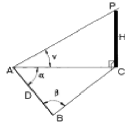
- 31.54m
- 32.42m
- 32.63m
- 33.56m
(정답률: 36%)
80. 실제 31° 46' 08″인 각을 1분까지 읽을 수 있는 트랜싯을 써서 6회의 반복법으로 관측했을 때의 결과각은? (단, 기계 및 관측오차는 없는 것으로 가정한다.)
- 31° 46′ 48″
- 31° 46′ 04″
- 31° 46′ 20″
- 31° 46′ 10″
(정답률: 39%)
5과목: 측량학
81. 측량법상 측량기술자의 자격기준 중 학력·경력자인 경우 고등학교를 졸업한자로서 3년이상 측량업무를 수행한 자는 어느 기술 등급에 속하는가?
- 고급기능사
- 초급기능사
- 초급기술자
- 중급기술자
(정답률: 36%)
82. 성능검사를 받아야 하는 측량기기 중 토털스테이션의 성능 검사 주기로 옳은 것은?
- 6개월
- 1년
- 2년
- 3년
(정답률: 22%)
83. 기본측량에 의하여 생긴 손실보상에 대한 설명으로 옳은 것은?
- 국토지리정보원장이 관할 시장 또는 도지사와 협의하여 결정한다.
- 측량심의회에서 결정한다.
- 건설교통부장관이 관할시장 또는 도지사와 협의하여 결정한다.
- 국토지리정보원장이 손실받은 자와 협의하여 결정한다.
(정답률: 50%)
84. 기본측량의 실시공고를 당해 시·도의 게시판에 공고하는 경우, 최소 몇 일이상 게시하여야 하는가?
- 7일 이상
- 10일 이상
- 14일 이상
- 20일 이상
(정답률: 58%)
85. 공공측량 계획기관이 공공측량을 실시하고자 하는 경우에는 작업규정을 작성하여야 하는데 이때 이 작업규정에 반드시 포함되어야 할 사항이 아닌 것은?
- 사업명
- 목적 및 활용범위
- 작업방법
- 사용할 측량기기의 성능검사내용에 관한 사항
(정답률: 50%)
86. 다음 설명 중 잘못된 것은?
- 시장·군수 또는 구청장은 관할구역안에서 지형·지물의 변동이 있는 때에는 건설교통부장관에게 보고하여야 한다.
- 건설교통부장관은 지형·지물의 변동조사 보고내용을 확인하기 위하여 소속공무원으로 하여금 현지조사하게 할 수 있다.
- 건설교통부장관은 관계행정기관 또는 기타의 자에게 기본측량에 관한 자료의 제출을 요구 할 수 있다.
- 기본측량에 종사하는 자는 측량을 실시하기 위하여 타인의 토지나 건물에 자유롭게 출입할 수 있다.
(정답률: 45%)
87. 기본측량을 위하여 설치한 측량표의 이전 신청에 의해 국토지리정보원장의 표지이전 통지가 있은 경우 이전에 필요한 경비는 누가 부담하는가?
- 건설교통부장관
- 국토지리정보원장
- 서울특별시장, 광역시장 및 도지사
- 신청자
(정답률: 47%)
88. 측량의 기준 중에서 거리와 면적은 다음 중 어떤 값으로 표시하는가?
- 평면상의 값으로 한다.
- 지평면상의 값으로 한다.
- 지구표면상의 값으로 한다.
- 회전타원체상의 값으로 한다.
(정답률: 53%)
89. 측량업자가 폐업한 때의 신고의무에 대한 설명으로 옳은 것은?
- 청산인이 사유가 발생한 날로부터 20일 이내에 신고
- 측량업자이었던 법인의 대표자가 사유가 발생한 날로부터 40일 이내에 신고
- 측량업자이었던 개인이 사유가 발생한 날로부터 30일 이내에 신고
- 청산인이 사유가 발생한 날로부터 30일 이내에 신고
(정답률: 39%)
90. 다음 중 공공측량의 측량성과 작성자는?
- 공공측량의 계획기관
- 국토지리정보원장
- 건설교통부장관
- 공공측량의 작업기관
(정답률: 47%)
91. 지도 도식 규칙에 대한 다음 사항 중 옳은 것은?
- 지도의 도곽은 외도곽,중도곽,내도곽으로 구분한다.
- 주기에 사용되는 문자는 한글,한자,영자 및 아라비아 숫자로 한다.
- 지모의 표현은 등고선에 의하며 계곡선으로 표시하지 않는다.
- 선은 실선과 파선 및 점선으로 표시한다.
(정답률: 64%)
92. 중앙지명위원회의 위원장은 누구인가?
- 건설교통부장관
- 국토지리정보원장
- 건설교통부차관
- 행정자치부장관
(정답률: 34%)
93. 무단으로 측량성과 또는 측량기록을 복제한 자에 대한 벌칙으로 옳은 것은?
- 3년 이하의 징역 또는 3000만원 이하의 벌금
- 2년 이하의 징역 또는 2000만원 이하의 벌금
- 1년 이하의 징역 또는 1000만원 이하의 벌금
- 200만원 이하의 과태료
(정답률: 56%)
94. 시·도지명위원회는 지명에 관한 심의, 결정사항을 최대 며칠이내에 중앙지명위원회에 보고하여야 하는가?
- 15일 이내
- 7일 이내
- 10일 이내
- 20일 이내
(정답률: 27%)
95. 공공측량으로 지정할 수 있는 일반측량이 아닌 것은?
- 측량실시지역의 면적이 1㎞2 이상인 지형측량
- 측량노선의 길이가 5㎞ 이상인 수준측량
- 공공의 이해에 특히 관계가 있다고 인정되는 사설철도 부설에 수반되는 측량
- 국토지리정보원장이 발행하는 지도의 축척과 동일한 축척의 지도제작
(정답률: 38%)
96. 다음 중 측량작업 기관에 대한 설명으로 틀린 것은?
- 측량계획 기관의 지시에 의하여 측량에 관한 작업을 실시하는 자
- 측량계획 기관의 위임에 의하여 측량에 관한 작업을 실시하는 자
- 측량계획 기관이 그 계획한 측량을 직접 실시하는 경우
- 발주자로 부터 측량용역의 도급을 받은 자
(정답률: 28%)
97. 다음 중 임시 설치표지에 해당하는 것은?
- 기선표석
- 표기
- 도근점 표석
- 측량표지막대
(정답률: 39%)
98. 1:50,000 지형도에서 교량(철도교,육교,교량,도보교)의 표시에 대한 설명으로 옳은 것은?
- 다리 길이가 10m 이상의 것만 표시한다.
- 다리 길이가 20m 이상의 것만 표시한다.
- 다리 길이가 30m 이상의 것만 표시한다.
- 다리 길이가 40m 이상의 것만 표시한다.
(정답률: 47%)
99. 기본측량 및 공공측량에 대한 측량용역대가에 대한 설명으로 옳은 것은?
- 측량용역대가의 기준을 정한 때에는 관보에 고시하지 않음을 원칙으로 한다.
- 측량용역대가의 기준은 건설교통부장관이 정한다.
- 측량용역대가의 산정방법은 건설교통부령으로 정한다
- 측량용역대가의 산정은 직접측량비만을 구한다.
(정답률: 50%)
100. 1:50,000 지형도에서 목표물의 취사 선택 기준으로 옳지 않은 것은?
- 근거리에서 식별이 용이한 목표물
- 특별한 형태를 이루고 있는 것
- 학술상 저명한 것
- 표시할 목표물이 다수 근거리에 있을 경우는 일부 기호 표시를 생략한다.
(정답률: 50%)
지오이드는 지구의 중력장과 관련된 등포텐셜면으로, 지구의 실제 모양을 나타냅니다. 지구의 표면은 지형적인 변화와 함께 중력장의 영향을 받아 불규칙한 모양을 가지기 때문에, 이를 평균화한 것이 지구타원체입니다. 지오이드는 이 지구타원체와의 차이를 나타내는데, 이 차이를 수준 편차라고 합니다.
따라서, "지구타원체 법선과 지오이드 법선의 차이를 수준 편차라 한다."는 옳은 설명입니다.